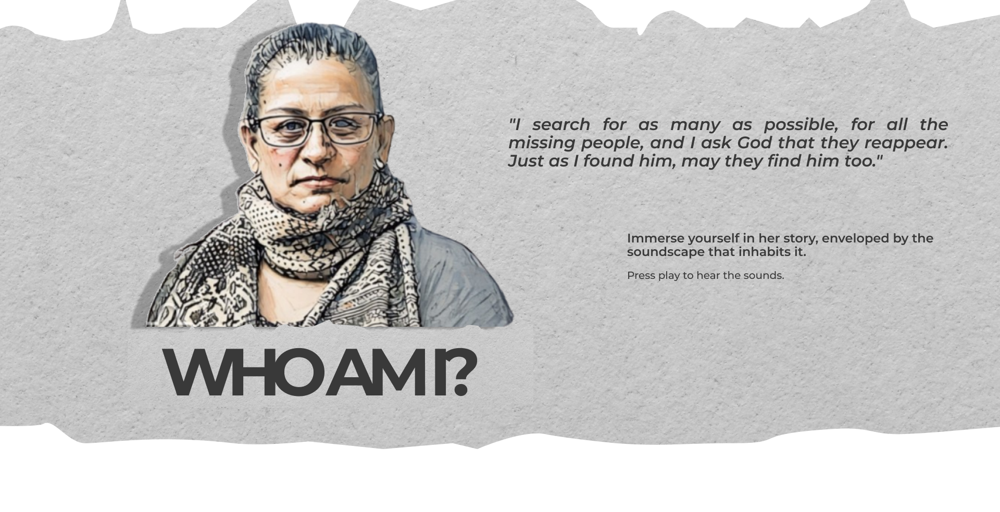

At school we had classes, and I was happy. But life in the countryside brought early responsibilities, and I had to leave school after primary. The dream of playing guitar slowly faded away. I learned just a little—enough to keep the desire alive.


I was born on September 10, 1962, in Ibagué. Everything there sounds like music. We lived in a small village called Artango, on a farm where the birds and trees played symphonies with the wind. Since I was little, I was drawn to music, especially the guitar. At school we had music lessons, and I was happy. But life in the countryside brought early responsibilities, and I had to leave school after primary. The dream of playing guitar slowly faded away. I learned just a little—enough to keep the desire alive.
My parents were very close. They loved each other with a tenderness you hardly see anymore. My mother was generous. We lived near the road, and she would offer panela, guarapo, or herbal tea to anyone who passed by. There was always something to share.
Ah, Campana... She was a temperamental mare; she didn’t like women, but I loved asking my father to let me ride her. I was very pretty and had my admirers, so I would ride Campana into town, feeling powerful—like someone who could tame the untamable. I liked being seen, all elegant. But one day, right in front of everyone, the mare got wild and threw me off. They all laughed, of course, and even scolded me: “What were you doing on that animal?” they said.


He was a mischievous boy. He would go to the creek and come back soaked. “Mom, I already bathed,” he’d say. He was generous, a good student, and loved to draw. As a teenager, he played soccer with the neighbors and was always building things with his hands. Daniel was beautiful—such a big heart. Cheerful. Sweet. Kind. My boy.

Daniel Alexander Martínez. He was born on November 6, 1986. His birth was long, painful, but full of love—fifteen days of labor. He was a beautiful child: hyperactive, sweet, restless but loving. His grandparents adored him. I was the mother of four—three girls and him. Daniel taught me what it meant to love with every fiber of my being. Since I couldn’t continue with music, I bought him a small guitar. He fell in love with it and learned to play on his own.
He was mischievous. He would go to the creek and come back soaked. “Mom, I already bathed,” he’d say. He was generous, a good student, and loved to draw. As a teenager, he played soccer with the neighbors and was always creating things with his hands. Daniel was beautiful—such a big heart. Cheerful. Sweet. Kind. My boy.
I arrived first. I had to fend for myself. I couldn’t keep living under my mother’s wing. Daniel came when he was 14. He studied but didn’t graduate. He started working and studying technical drawing at SENA. It was hard for him—he took any job he could find: stores, construction. I wish I had told him, “Don’t wear yourself out so much.” But he wanted to help. At home we cleaned together, with music, as if everything were a party.
La naturaleza y mi hijo,
el campo nos susurraba,
el río, el guayabo aquel,
donde jugábamos cuando eras niño,
sigue creciendo,
allí quedaron nuestros besos,
nuestras voces.
Un pájaro cantaba en un árbol
que ya no se sorprendía,
hasta que el canto lo despertó,
y se fundieron en uno solo:
el árbol pájaro,
que guarda la vida, el amor, el eco
que no se extingue.
Allá, en la finca,
aún canta tu recuerdo
entre hojas y trinos,
aún crece
donde nació
nuestro amor.


I was coming home from a shift at the soap factory. When I arrived, I saw his résumé on the table. He was putting on cologne. He opened the door for me, smiling. He said he was going to hand in his papers. “Mom, don’t worry. I’ll be back this afternoon.”
There was a knock. It was Pedro Gámez. I recognized him. I got a bad feeling. I told him Daniel wasn’t home. Daniel, standing behind me, put his hand on my shoulder: “Mom, why are you denying me? I’m going with him.”

I was coming home from a shift at the soap factory. When I arrived, I saw his résumé on the table. He was putting on cologne. He opened the door for me, smiling. He said he was going to hand in his papers. “Mom, don’t worry. I’ll be back this afternoon.” He made breakfast for me—rice, avocado, tomato with onions, and a piece of liver. Then there was a knock. It was Pedro Gámez. I recognized him. I got a bad feeling. I told him Daniel wasn’t home. Daniel, standing behind me, put his hand on my shoulder: “Mom, why are you denying me? I’m going with him.”
They left. He was a former soldier who recruited young men, promising them jobs, helping them get documents. That day, he took about ten of them, including my son. He bought them bus tickets to Ocaña. They never came back.
Right away I went to the police. “Wait 72 hours,” they said. Then to the prosecutor’s office—they were on strike. A clerk told me my son was probably in El Cartucho, as if his life meant nothing. We started talking to other mothers. It wasn’t just my son. There were nineteen.
On October 2, eight months later, the prosecutor’s office told us there were bodies buried as John Does in Ocaña. My daughter went. She recognized him—his tattoo, his shirt, his bracelets. She made sure there was no mistake. She was the one who brought him back, sealed in a coffin. He arrived on October 4. We buried him that same day, at three in the afternoon, in the Bosa cemetery.


You die and are born again. That’s how the struggle began. Memory. Art has helped me heal. Nature too. I went through a process of forgiveness with one of the perpetrators. I was cured of my asthma. I learned that anger makes you sick, but forgiveness sets you free.
Daniel is still with me—in every guitar, in every child running, in every drop of rain that touches the earth.
If I could choose a superpower, I’d choose to be like a cat—intuitive, able to move through the world without losing myself, to read people’s energy, to protect my own, to hear Daniel’s voice in the wind.
When I ride a horse, I feel free again—like before, like when I believed I could tame the world. Like when Daniel looked at me with those eyes full of future. I still feel him. I still love him. And as long as I have a voice, I’ll keep saying his name.